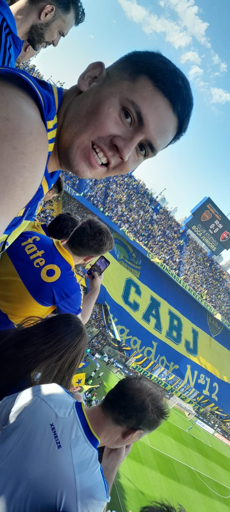
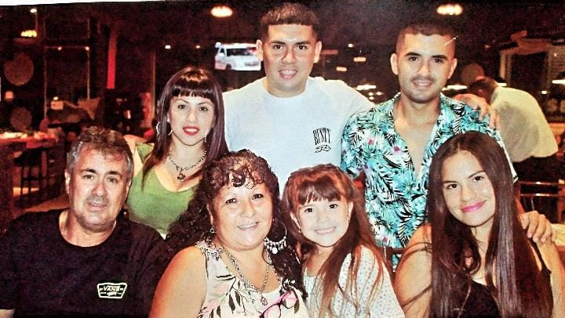
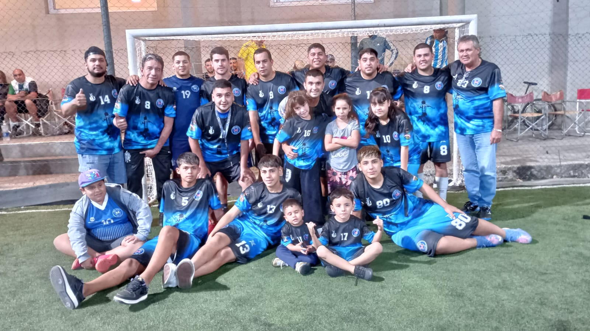
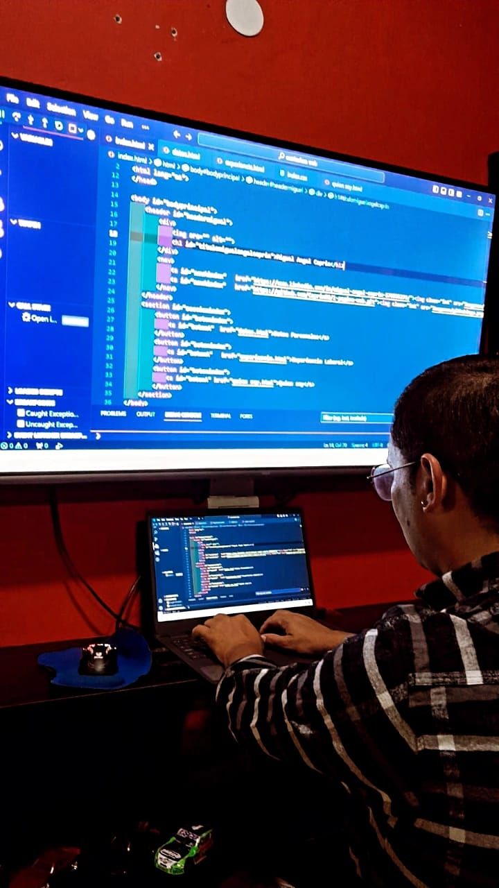

Mi nombre es Miguel Angel Caprin,tengo 32 años de edad,naci el 15 de marzo de 1992 en CABA(ciudad autonoma de Buenos Aires),vivo actualmentente en la calle Allemandri 2124 que esta ubicado en la localidad de Temperley en el Municipio de Lomas de Zamora.Mis padres son Silvia Islas y Miguel Angel Caprin,soy el mayor de dos hermanos, el se llama Lucas Caprin.Estoy en pareja actualmente desde 2015 con Cecilia Diaz.
Siguiendo con mi biografia ,vengo de una familia de taximetrero en CABA.Unos de mis hobby es el futbol tal es asi que tengo una gran aficion,o como se dice aca en Argentina "Soy Hincha" del Club Atletico Boca Junior y este amor por mi club viene heredado de familia.En mis tiempos libres o de ocio practico futbol en el club San Jose perteneciente a mi localidad ya hace varios años.Y a modo de recreacion juego al futbol con amigos y familia tal es asi que tenemos un grupo de futbol llamado "Monroe". Dentro de lo q es mi formacion academica,en el año 2009 termino mis estudios secundarios en el Colegio Santa Maria Gorretti. Para ese tiempo estaba pensando cual iba a ser mi futuro como profesional y que carrera debia elegir.Tal es asi que estaba entre estudiar para profesor de educacion fisica o programador web.El problema en la programacion era que para los tiempos que corrian no tenia tal acceso y asesoramiento en la carrera.Y entonces me decidi por ser profesor de educacion fisica, en el 2012 me inscribo en IMEF (Instituto Modelo de Educacion Fisica) y curso hasta el segundo año de la carrera abandonando a principio de 2015.
Luego de haber dejado de estudiar la carrera de profesor de educacion fisica me encontraba desempleado, y para ese entonces mi prioridad era trabajar, es hay donde comienza mi aventura en el mundo del Taxi hasta el dia de hoy.Pero a fines de 2022 luego de haber pasado 3 años de pandemia,donde habia tocado fondo mi trabajo e hay pense ¿por que no retomar y aprender a progrramar? Entonces decidi embarcarme y aprender programacion.Es por eso que me anote en el Instituto Teclab, y hasta el dia de hoy sigo en el instituto.
En conclucion siento la dicha de decir que cada minuto u hora que paso enfrente a la computadora aprendiendo me siento feliz; o cuando genere por primera vez "Hola Mundo" y ver lo que puede generar una linea de codigo,lo unico negativo que se puede observar es que desearia tener mas tiempo de estudio, ya el unico problema es que mi trabajo(taximetrero) me lleva muchas horas del dia por eso mi primer objetivo como programador amateur me gustaria estar dentro de una empresa ya sea como aprendiz, y asi podria respirar las 24hs de programacion ininterrumpidas.
